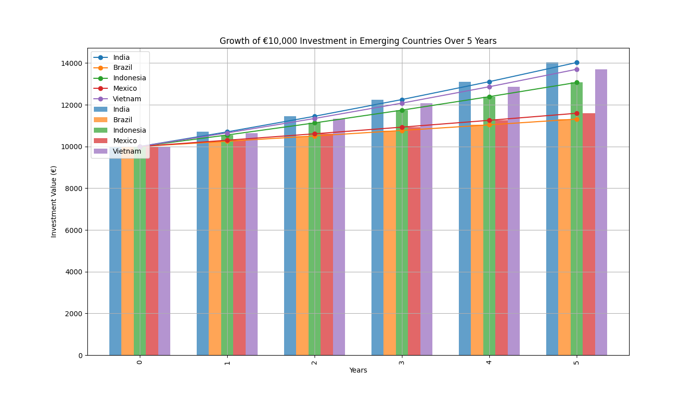
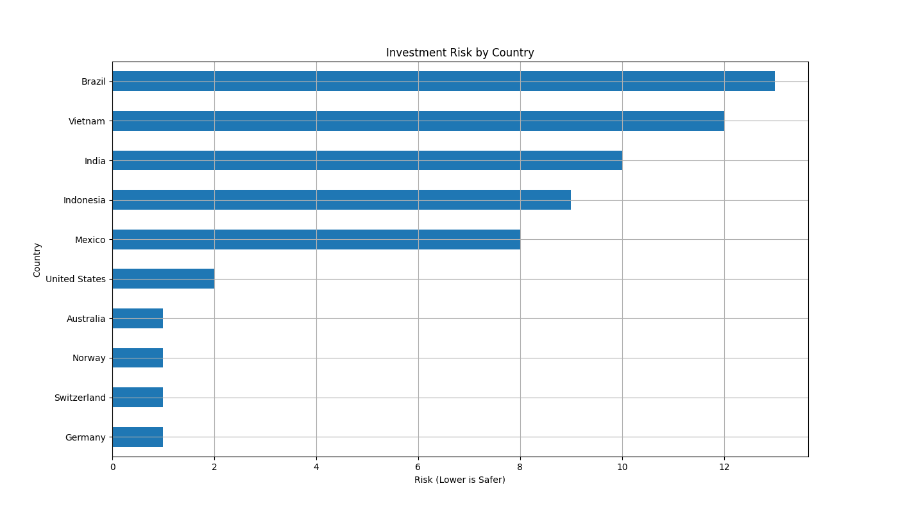

May 2024
Investment Analysis of Emerging Markets
An early analytical project comparing potential return and simple risk indicators across markets.



Question
How might a €10,000 investment develop over five years across selected safe and emerging markets under simplified growth assumptions, and how can return be viewed alongside a simple risk indicator?
What I learned
The project helped me practise transforming assumptions into calculations and charts, then explaining the result and its limitations clearly.